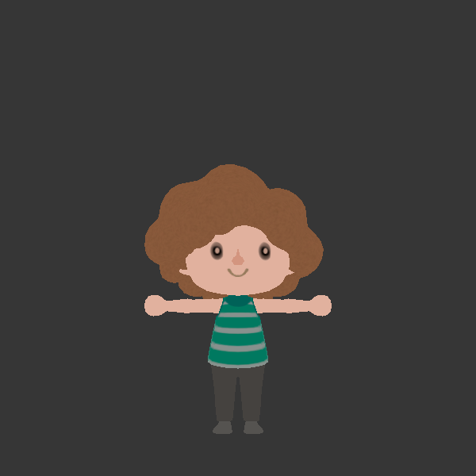
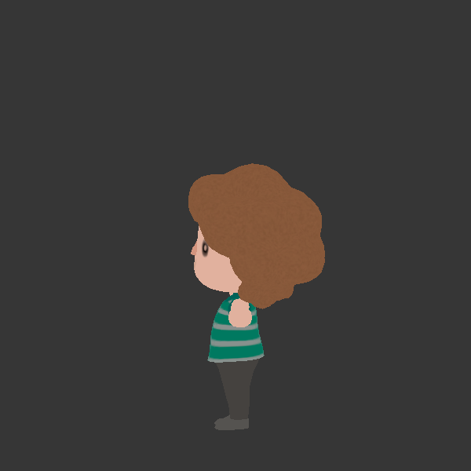
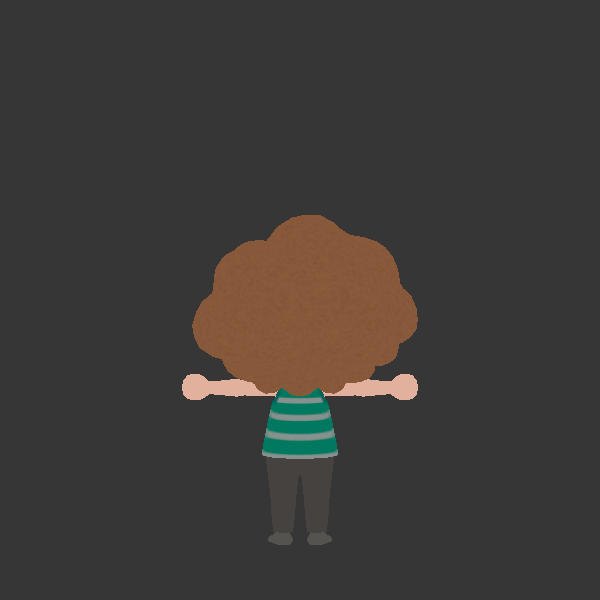
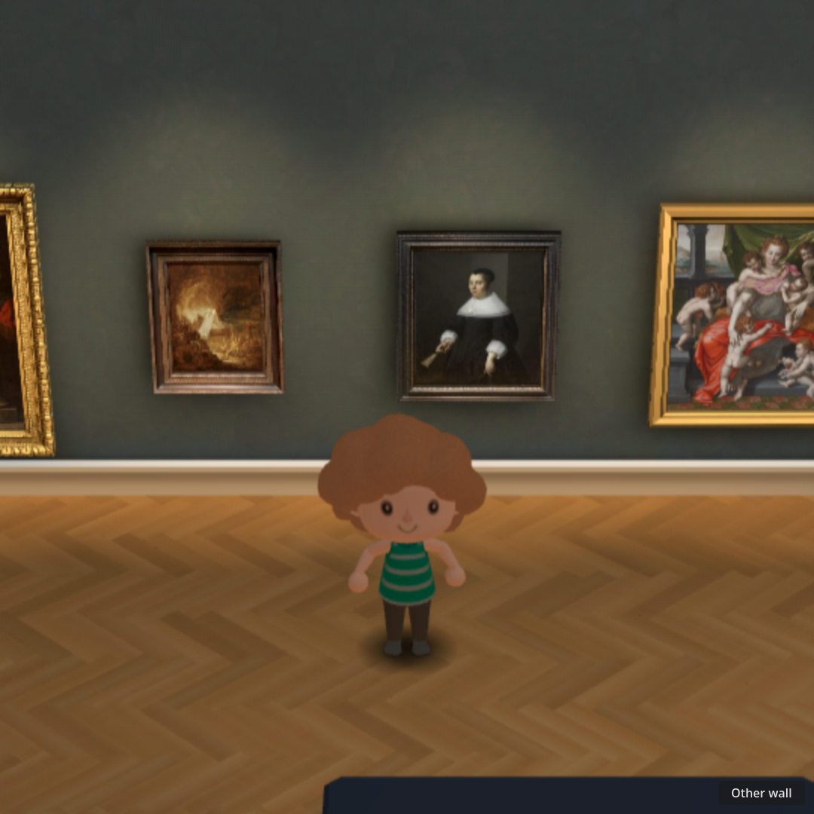
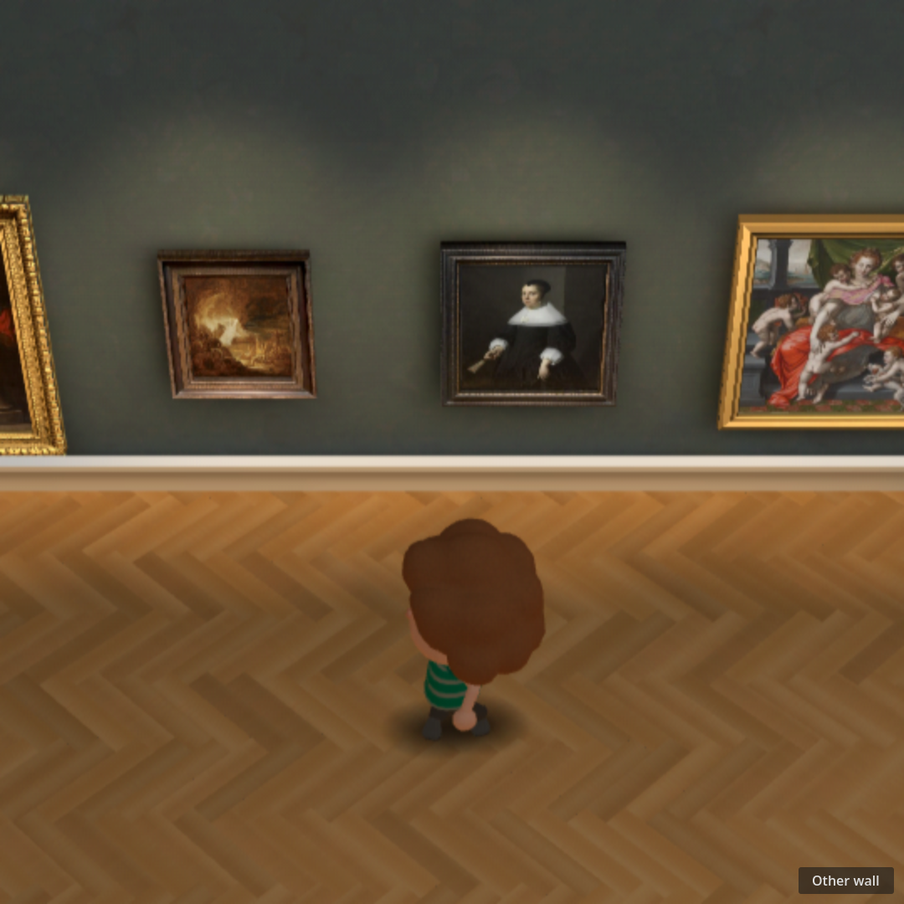
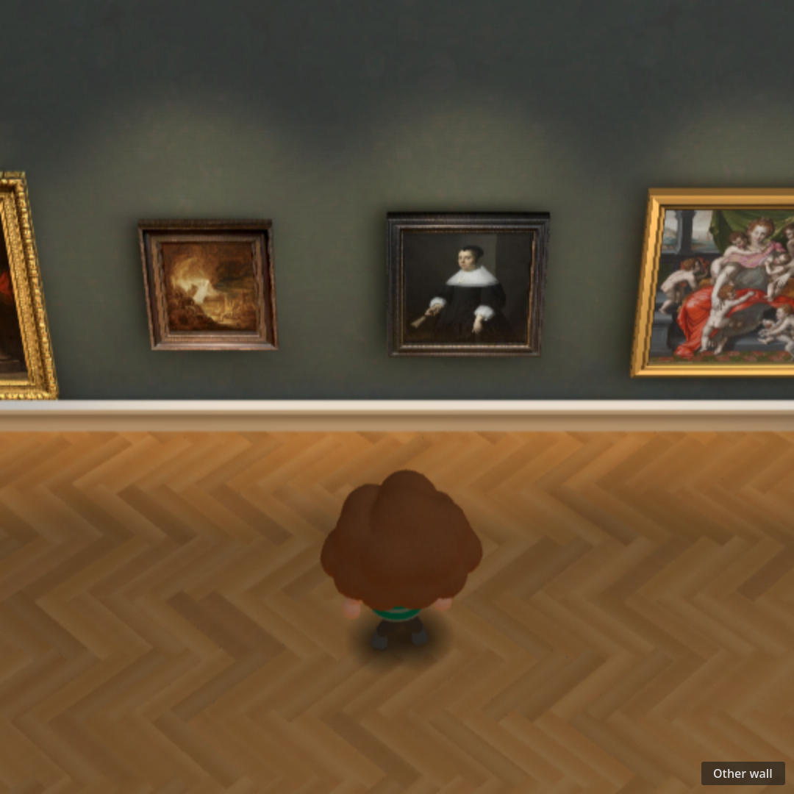
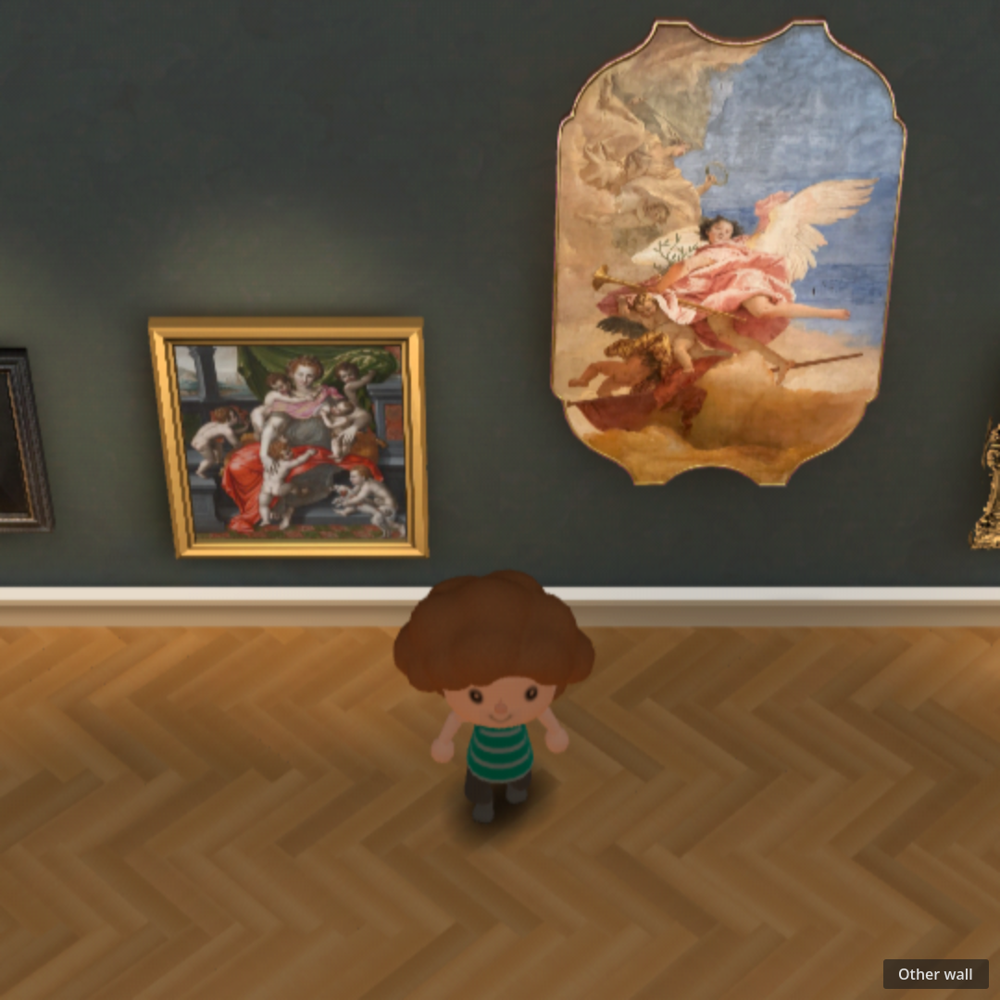
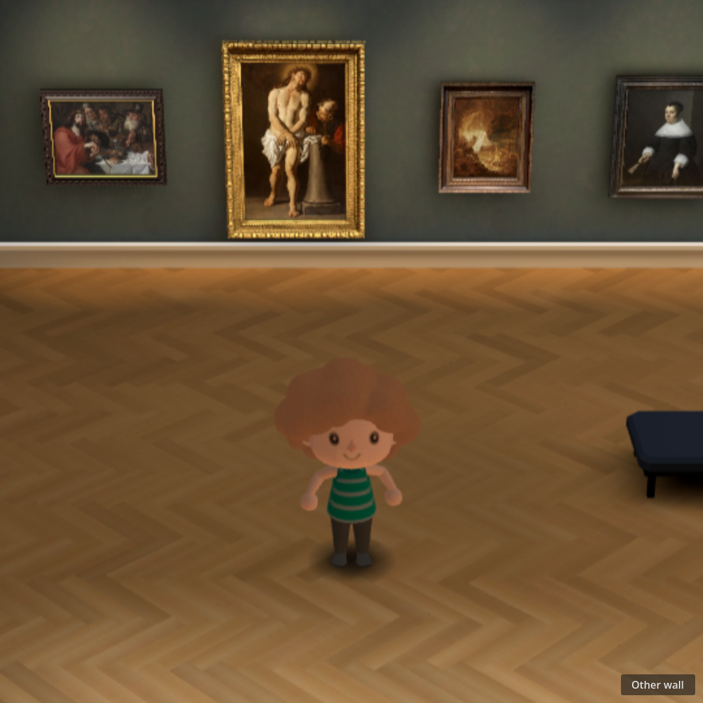
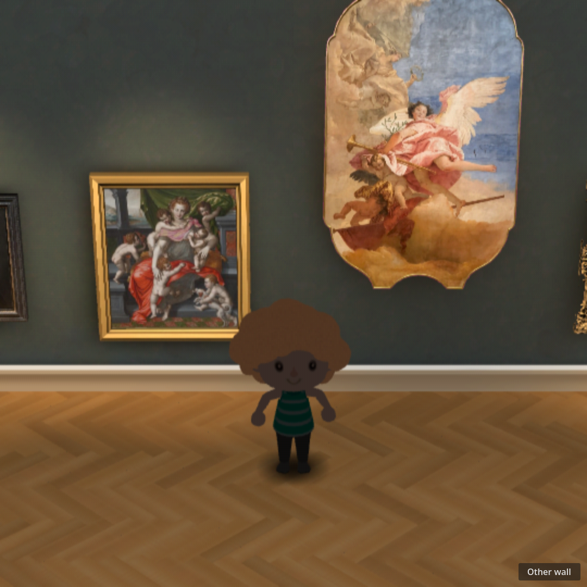

Sourced character geometry with labeled fallback motion. Throwaway evidence, not a released game asset or authentic Nintendo motion.






Independent WALL and DEMO clocks are visible during playback.


